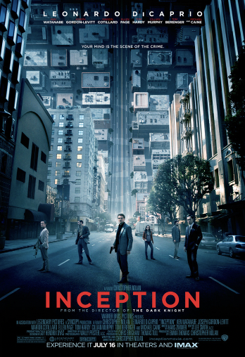
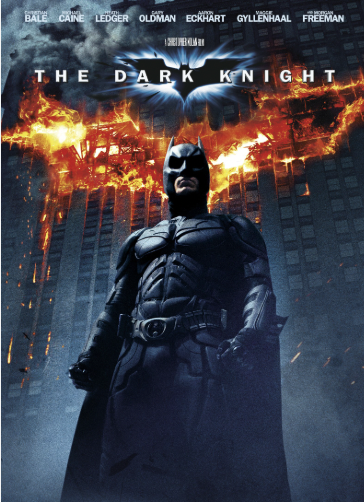
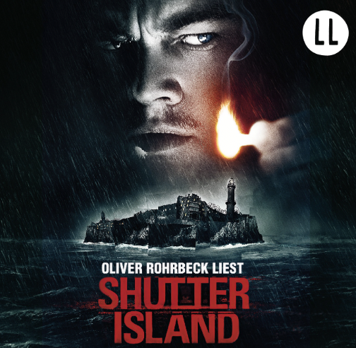

Interstellar is a 2014 science fiction film directed by Christopher Nolan.
Inception is a 2010 science fiction action film written and directed by Christopher Nolan.
The Dark Knight is a 2008 superhero film directed, produced, and co-written by Christopher Nolan.
Shutter Island is a 2010 American neo-noir psychological thriller film directed by Martin Scorsese.